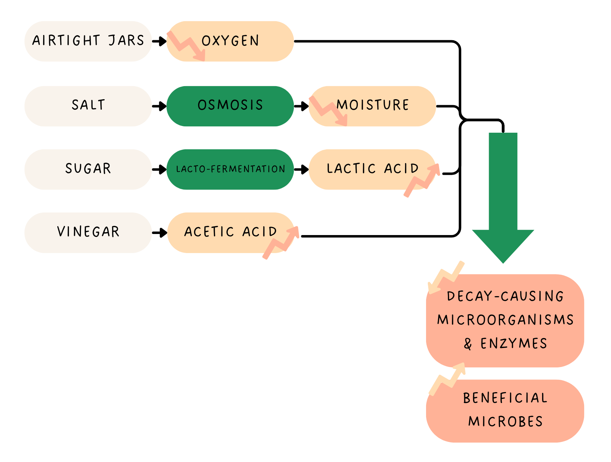

Pickling dates back to around 2400 BCE. Since then, pickling has appeared all over history.
Ancient Mesopotamians lived in the area between the Tigris and Euphrates rivers, near modern-day Iraq. Archaeologists believe that they first started pickling food around this time.
Queen Cleopatra of Egypt credited pickles for her beauty.
Roman emperors, like Julius Caeser, gave pickles to their troops to eat, thinking that they would make them strong.
While exploring the New World, Christopher Columbus supposedly gave pickles to his sailors to prevent scurvy, a serious disease caused by a severe lack of vitamin C.
Napolean Bonaparte offered 12K francs (the equivalent of $250K today) to the person who could come up with the best way to pickle food for his troops. Nicolas Appert won the competition.
During World War II, 40% of the United State's production of pickles went to armed forces.
Pickling helps create an unfriendly environment for decay-causing microorganisms and enzymes while encouraging the growth of beneficial microbes. This allows it to effectively preserve food.

lightbulb The optimal ph for pickling brine is 3.4 to 4.6 ph.